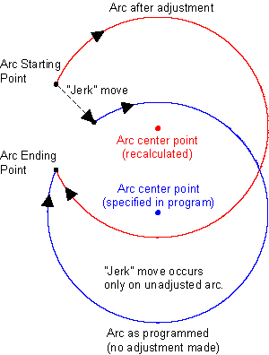

|
Default Value |
5.0 |
|
Minimum Value |
N/A |
|
Maximum Value |
N/A |
|
Units |
None |
|
Type |
Use the RadiusErrorThreshold parameter to specify the maximum error that can exist between the specified radius at the starting point and ending point of a CW or CCW command before a task error occurs. The units of this parameter are specified in percent (%) that you can calculate with the following equation.
|
where |
Start Point Radius is the distance from the start point to the arc center of the circle. |
|
and |
End Point Radius is the distance from the end point to the arc center of the circle. |
All circular radius errors with a magnitude greater than the value of this parameter generate a Circular Radius Error. Circular radius errors with a magnitude less than the value of this parameter do not cause an error, and the controller continues the motion in either the Adjust or the Jerk method.
A new center point is calculated to make the specified end point and radius correct. This is the usual method.
The axis suddenly jerks to a new start point at the beginning of the move to make the specified center, end point, and radius correct. This method is used if either of the following conditions are true.

Use one of the following options to prevent all circular radius errors.
|
Note: Except for the -1 setting, the continuation method that is used is determined by the RadiusCorrectionThreshold parameter value. |
|
Note: The Circular Radius Error test is only done when you specify arcs (CW or CCW) with the IJ method. |
|
Note: Leave the Circular Radius Error test active until your program is completely debugged. If you turn it off, you can write invalid (noncircular) CW and CCW commands without generating any warning. |
|
Was this information helpful? Yes No |
Copyright |
 2001-
2001-